It's difficult to summarize in a few lines the full life of Ohad, which was suddenly cut short before he turned 26.
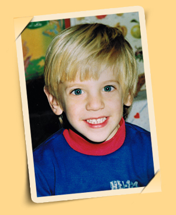
Ohad was born in Netanya in March 1983 to his loving parents, Hana and Gabi, the "sandwich child," brother to two sisters - Dikla and Rakefet. Ohad was a mischievous child who never rested for a moment. Despite his daily pranks and mischief, it was impossible to be angry with him. His heartwarming smile and personal charm melted any possible anger. More than once, his mother stood with an angry face over some deed, and immediately afterward burst into uncontrollable laughter.
Ohad grew up surrounded by the love of his extended family and was educated at Bialik Elementary School and later at Alad High School, majoring in physics and computers. Throughout his life, Ohad demonstrated outstanding excellence in all areas - studies, sports, hobbies, and of course his military service. But above all his achievements, Ohad's captivating personality always stood out - with his constant smile, the abundant humor he showered on his family and friends, the optimism, happiness, warmth, joy of life, and the help he gave unconditionally to anyone who asked for his assistance.
Ohad enlisted in Mamram, the prestigious computer unit in the IDF's C4I Corps, and after his training was placed in the IDF's mapping unit in the Intelligence Corps. As a young soldier, Ohad demonstrated great professionalism, determination, and a constant desire to influence and strive for improvement and excellence. Therefore, naturally, Ohad went to the officers' course, after which he filled several challenging command and management positions. Before his eyes always stood the good of the unit, the good of his soldiers, and fundamental values of mission accomplishment, equality, and justice. He filled all his positions with determination and professionalism that earned great appreciation from his commanders, and always with good spirit, humor, and deep camaraderie. The military period was characterized by long hours of exhausting work on an important mission combined with parties and social events that Ohad and his friends organized for the unit.
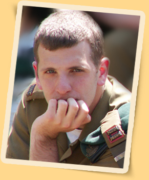
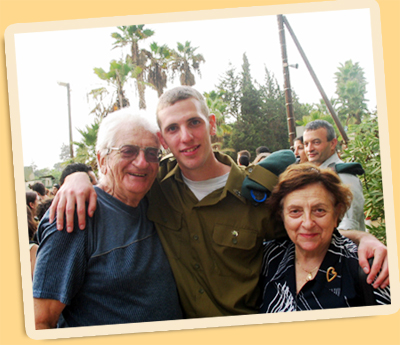
In parallel with his military service, Ohad studied at Tel Aviv College (now University) for a bachelor's degree in computer science and economics in a track designated for Mamram graduates, a degree he completed with excellence. In 2008, Ohad took off his uniform after more than six years of service and spent the last year of his degree living in an apartment he rented on Arba Ha'aratzot Street in Tel Aviv. At first, Ohad didn't know what to do with all the free time he had after being accustomed to combining demanding studies with intensive military service. But very quickly Ohad adapted to Tel Aviv life and knew how to enjoy it to the fullest with shared outings with his many friends, parties, and poker evenings he loved to organize. Nevertheless, Ohad was a very family-oriented guy and made sure to come home every weekend to spend time and shower warmth, love, and hugs on all his family members.
Ohad had a warm and unique relationship, based on mutual love and appreciation, with his grandparents, Vera and Miki Dotan, with whom he used to play bridge and participate in tournaments from a young age. Fate had it that Ohad chose to take a day off from the army and spend it in a day full of fun with his grandparents - one day before the passing of his beloved grandfather.
Ohad was a man of principles and a natural leader, the one who always organized everything and everyone relied on him to lead the way. As such, Ohad worked within "The Forum for Equality in Burden," advocating for universal conscription, a principle he believed in with all his might.
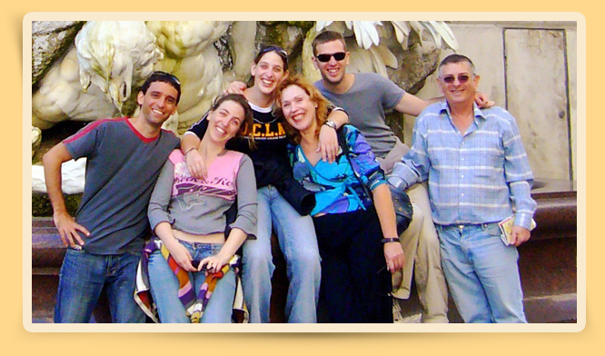
Ohad knew how to make the most of life and over the years traveled extensively throughout Israel with his family and friends to every corner. He also traveled a lot abroad, starting with a roots trip with his family to Hungary, Poland, and Austria, a family trip with friends to Jordan, a bar mitzvah trip to the United States, a bat mitzvah trip for Rakefet to England, France, Holland, and Belgium, a jeep trip of fathers and sons to Turkey, a trip to the World Cup in Germany, a trip with a girlfriend to Turkey, numerous ski trips to Europe, and the wonderful eight-day trip with the whole family to Austria a year before the disaster. But without a doubt, the highlight was the great trip that Ohad planned and talked about for a long time to Australia and New Zealand - the trip from which he never returned. In the first days in Australia, Ohad didn't really find himself and missed his family and the hominess he so loved very much. The many photos he took illustrate the scope of the landscapes he saw, the many and varied experiences he accumulated, and the good relationships he naturally managed to create with other travelers from around the world. Even during the trip, Ohad made sure to maintain daily contact with his parents and grandmother, updating them at length and patiently about all his experiences.
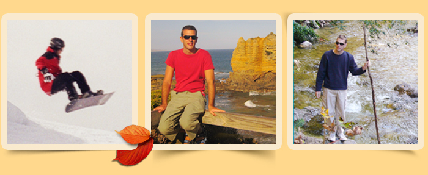
Ohad was killed on the 1st of Shevat 5769 (January 26, 2009), while hiking on the summit of the highest mountain in New Zealand at Mount Cook National Park. He was taken before his time, in the prime of his life, leaving behind devastated and heartbroken parents, grandmothers, two sisters, a brother-in-law, and countless friends and relatives. Hundreds accompanied him on his final journey on a very cold and rainy winter day at the pastoral cemetery of Kibbutz Horashim. His relatives, friends, commanders, and subordinates eulogized him and expressed not only their deep personal grief but also the magnitude of the loss and their great appreciation for Ohad and the strong impression he left on them during their acquaintance.
At the end of the funeral, a ray of sunshine broke through the gray clouds and illuminated the drops of rain on the pool of flower petals that covered Ohad's fresh grave. A huge void opened within us with Ohad's passing. May his light continue to shine and bring comfort to all of us - his family, relatives, and friends.
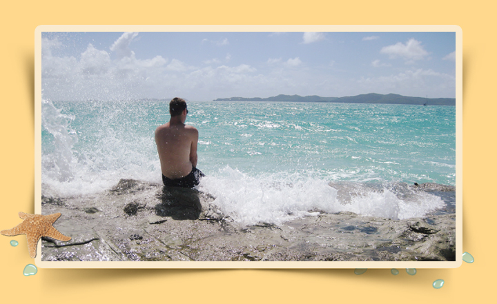
LIVING LIFE
Ohad had hobbies, many hobbies. Everything he saw before him, he chose to try and test. Motorcycles, skydiving, wakeboarding. All kinds of sports. Poker with friends, bridge with dad. On the big trip to Australia and New Zealand, he managed to add to the list even more experiences like a surfing course, snorkeling, kayaking, tubes...
Ohad's life was indeed short, but full and enjoyable.
Bridge game
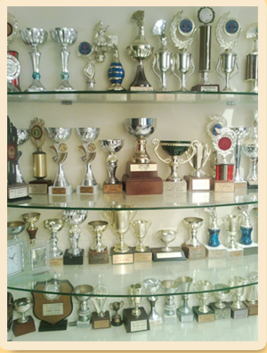
One of Ohad's favorite areas was the game of bridge.
Playing bridge in the family was also an intergenerational combination. It began with Ohad's great-grandmother, continued with me, Ohad's grandmother, and my late husband, then Gabi joined the game, and later Ohad. We participated in many tournaments and achieved high results and rankings.
Ohad, despite his young age (he started playing at age 10), grasped the rules of the game, improved very quickly, and won trophies in many tournaments.
In most tournaments, Ohad was the partner of his father (bridge is a pairs game), and sometimes he played with us. Ohad's game was calculated, accompanied by consideration before every move. With much patience, a high level of concentration, and a desire to succeed.
Ohad was a good player, and therefore achieved many successes. But more important than that were his qualities that were also expressed at the bridge table. The smile, the warm relationship with everyone, the personal charm, the joy of life, the consideration for everyone made him a player beloved by all. Ohad never got angry during a bridge game (a quite rare quality among many bridge players). In most tournaments, Ohad was the youngest player, and the age of most competitors was more than three times his age.
Despite this, he was a person who conversed with everyone and knew how to create the right connection that everyone loved.
Ohad arrived at the weekly tournaments straight from the army, usually at the last minute. Despite the delay, he never sat down to play before first approaching my and Miki's table to give us a warm hug and kiss. He warmed our hearts with all his actions. We were always proud of him. Grandma Vera
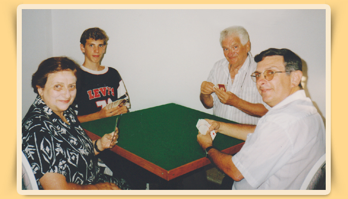
Ohad started learning bridge at a young age and continued to play.
In Netanya, there were no players his age, and I seized the opportunity with both hands, and we started playing in weekly tournaments as partners in the game. I always looked forward to these hours. These were our hours - only ours.
Even when Ohad moved to live in Tel Aviv, we didn't give up the weekly meeting, and once a week I would travel to Tel Aviv, meet Ohad, and play with him in a competition in Ramat Aviv.
The meetings were enjoyable, interesting, and created a special closeness. They always began with a strong hug and a real kiss, not just to fulfill an obligation, an interest in what's new and how everyone is doing, and only then the game.
In the first years, Ohad would listen to comments about the game, pay attention, internalize, and improve his play. As he matured and his game improved, his self-confidence also grew (which was never small). He no longer accepted every comment with closed eyes, but thought, examined, and made his comments when he thought differently. Always politely, calmly, respectfully.
Not an evening went by in which we didn't earn envious looks from other participants in the tournament. Many also found it appropriate to tell us how much they too would like to reach such a state with their children. And I - my heart filled with joy and pride.
The bridge tournaments were for us the excuse and meeting place for meetings that we loved so much. Thanks to bridge, we had quality father-son hours, hours that will never return. Dad Gabi
Ohad and Poker
Ohad organizing a poker evening -
Ohad: "Okay, everything's set, tomorrow at 9:00 PM everyone plays... are you coming?" (Ohad asks and doesn't leave much room for doubt).
Me: "I'm coming, where are we playing?"
Ohad: "At yours!" (smiling).
This is just one of the beautiful moments that come up when I try to remember Ohad in one of his hobbies - the game of poker.
Ohad was a poker player from birth and up, he had everything a high-level poker player needs: he knew how to "read" his opponents, bluff them, pressure them, take calculated risks. To sweep and enthuse.
Beyond that, Ohad also had quite a few gimmicks of a professional player (sunglasses, hoodie, and more).
The truth is that I have difficulty describing Ohad's greatness as a player and his beautiful moments with two cards in hand and a pile of chips lying next to him (at least most of the time). Ohad is GREAT! He loved to play, anyone who had the privilege to play with him surely knows this.
For those who had the privilege to play with him, and those who didn't, I'll try to bring a few examples of Ohad and the game of poker, this is in my opinion the best way to express Ohad's relationship with the game.
Ohad sweeps the entire pub -
About once a week, Ohad and I would go out to play poker at a pub on Dizengoff Street.
We joined a table and played against players we were meeting for the first time.
On one occasion, Ohad bet all his chips, he and the only player left facing him revealed their cards and the flop opened (the first three cards out of five revealed in a type of poker called "Texas Hold'em")
I'm not sure I remember what cards Ohad and the opposing player had, but I remember that Ohad quickly understood that he was going to lose all his chips, unless in one of the two cards that had not yet been revealed, the card "8" would come.
I have no idea where it came from, but that's exactly what happened at that moment:
Ohad: "Give me an eight!, I need an eight!, I must have an eight!"
The whole pub: "Eight, eight, eight..."
It seems we all shouted really loudly, because the eight came. It was hard to erase the smile from Ohad's face for the rest of that evening.
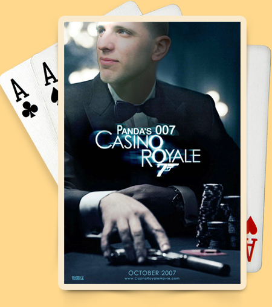
Ohad's good heart and the game of poker
Poker is played to win, that's clear to everyone, and in my opinion, winning was more important to Ohad than to all of us.
Despite this, when Ohad was not pleased to see that one of the players who used to play with us (Yuri, this isn't you), was again going home having lost all his chips, Ohad withdrew from the game even though he was certainly about to win all the chips.
Ohad was undoubtedly a poker player with a big soul.
Ohad organizing a poker tournament before his trip -
A few days before his trip, Ohad organized a poker tournament that he worked on quite a bit.
The game included two full tables, Ohad explained to everyone the rules of the tournament, and the game was underway.
The truth is that in parties like these and others, I lost quite quickly, and I don't remember the results of the tournament.
One thing I remember very well, he "forced" me to finish early (a day before) an event I had a part in organizing in the Mitzpe Ramon area so I could make it to said tournament.
That's how it is when Ohad cares about something, it's hard to convince him otherwise, and he undoubtedly knew how to do what was needed for it to happen.
Ohad loved to go all in
"An announcement by a poker player betting all the chips in his possession. All in"
Ohad loved to use the aforementioned announcement, he had much more courage than any player I know, and more than once he used this announcement several times in a row - very rare for a player who knows the rules and knows how to play.
Ohad was very competitive and undoubtedly didn't like to leave the game as a loser.
Ohad's desire for excellence was expressed in the game. From his perspective, even a small loss was as heavy as losing all the chips. This is one of the reasons why Ohad made, in my opinion, frequent use of the aforementioned announcement.
Bet upon bet -
Ohad didn't settle for the bet in the game, and when at one point there was doubt who was a better poker player, Ohad suggested that the loser would double the amount of winnings to the winner between the two of us.
This proposal caused raised eyebrows from most of us, but to prove once and for all who is better, it was hard to refuse such a proposal.
We played several times in this format. Ohad won most times and the amount of his chips doubled.
It turned out that Ohad played better!
Candid disclosure:
I'll speak for myself, but I think there are many more who share this feeling, since Ohad was killed, the game has lost much of its flavor.
The few times I returned to play, and even in the few times I played, I didn't feel much pleasure.
I hope the examples I brought illustrate a little how it feels to play with the greatest of all.
To sum up, I'm not exaggerating when I say that playing poker without Ohad is like playing poker without an ace.
Yoel
Gambling
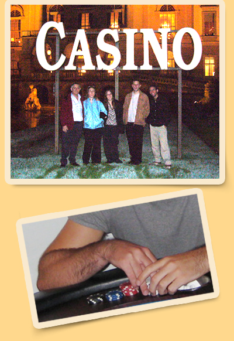
Ohad loved all kinds of occupations that have adrenaline in them, and included in this are bets and gambles. He loved to play poker on the internet on various sites, to play poker with his friends (preferably twice a week and impossible only 20 shekels - that's too little, need 50 with rebuy), to gamble in a casino when possible during a trip abroad, but mainly (and this is only because life's opportunities offered him these) - to bet on anything that moves.
"I bet with you on a cold Coke that the next person who enters this such-and-such room will say such and such when he enters" was a typical sentence of Ohad at the end of the lunch we ate in the army when we came to eat from home and after we annoyed him quickly.
"Five shekels that the driver down at the religious will run out of time" - you don't really need a reason to bet, every situation offers endless natural opportunities. Tempting was the fact that Ohad also won most of these bets - maybe because he formulated them in a sophisticated way so that they seemed like a random story from life, but in fact he had some prior knowledge? We'll never know the answer.
Of course, all the bet and gamble stories produced seas of funny stories to tears that Ohad would tell the next day.
"Don't ask brother, I'm really bummed - yesterday I lost 100 dollars on some site I was sure I cracked its system" - he would say in the morning of some day.
"Brother, you won't believe what bet I made yesterday 100 shekels" - could have been the beginning of a story that in the end we all rolled on the floor with laughter.
Ohad's life was full of interest and he had no problem finding interest even in the most routine situations there are.
Yuri
Ski vacation
One winter day, in early 2003, Ohad asked me: What do you say we go snowboarding together? I didn't even know the difference between snowboarding and skiing, so Ohad made sure to update me in detail that skiing is passé, old, and all adults do skiing, but snowboarding, it's with one board instead of a pair of skis, it's cool, it's for the young and it's much more worthwhile. Needless to say.. I was convinced!
From that moment Ohad didn't stop looking for shops to buy equipment and suitable destinations for the vacation.
We bought our ski suits together at a store in Tel Aviv and prepared for an organized trip of a week in Andorra (a small principality in the mountains between Spain and France).
We landed in Barcelona and traveled by bus for about 3 hours to Andorra. As we approached and already saw snow covering the mountain peaks, Ohad didn't stop getting excited at the sight of the snow.
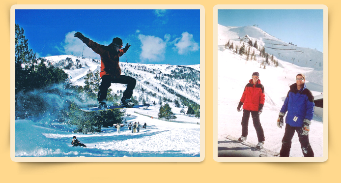
On the first day it took us a while to get used to standing on the snowboard without falling, but Ohad grasped it much faster than me. And already at the lunch break he decided that instead of walking down around, to get to the restaurant down the mountain, we'd go down a short and steep section of a few dozen meters on the red slope (as opposed to green for learning or blue for beginners). Of course Ohad glided it quite well, I managed to fall a few times.. but we arrived safely at the restaurant.
On the second day we already went up a small hill and learned how to make turns with the snowboard. The next day Ohad already glided excellently and I who fell all the time and buried myself again and again in the snow, took advantage of the frequent breaks to photograph him gliding past me. We were a whole week in Andorra and enjoyed very much.
A year later we flew together again to "Sankt Johann" in Austria, you'll find the description of the unique experience we had on the first day there, ("when they closed the mountain on us"), in full detail in the memory diary..
Since then Ohad managed to fly a few more times for snowboarding vacations, to different destinations with different friends. I also get to glide every year and every time I reach the highest peak at the ski site where I am, I don't forget to thank and remember the one who first revealed to me this amazing experience!
Ran
Soccer
The world of soccer and especially Maccabi Netanya, were a very significant part of Ohad's life.
Almost every conversation between us started about soccer, minimum twice a week. Even the last conversation between us dealt with soccer. He always had something to say both about Israeli soccer and world soccer. Endless discussions about players and teams. Sometimes a conversation whose purpose was to set a meeting lasted a quarter of an hour just about soccer, and another two minutes at the end to set the meeting. It seems that thanks to the fact that I never understood a thing or half a thing about world soccer, except for team names, Ohad found in me a natural partner for listening to his monologues on topics such as: "Messi is an excellent player, you can't say he's not. But r-i-g-h-t n-o-w and I'm emphasizing r-i-g-h-t n-o-w he's not as good a player as they make him out to be. Maybe in another two-three years we'll see, but r-i-g-h-t n-o-w he's not yet. Barcelona is rising, the best in the world. But it's not because of him, the fact that he was chosen does nothing.."
When the World Cup was in Germany, Ohad flew there. As I imagine he only entered four games ("Do you know how much it costs? Whoa! Brother, you don't understand...") but still went to the games without tickets, just to be near the stadium and enjoy the atmosphere. His willingness to come just to enjoy the atmosphere was also on the last trip, when he entered a cricket game without understanding a thing, but enjoyed the atmosphere there very much ("Brother, I didn't understand anything, but man we don't have such atmosphere at all).
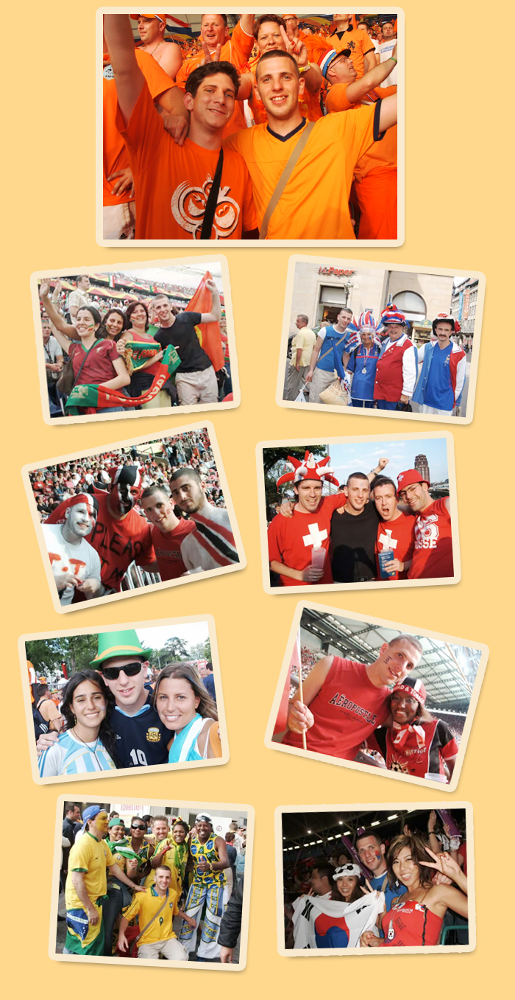
I miss the conversations with him very much. Especially with Ohad, from my perspective, a large part of my personal interest in soccer was buried. Nevertheless, when Maccabi Netanya succeeds, I imagine the conversation that Ohad would certainly make me after that. A conversation that starts with real joyful questions, like the last of the Bnei Akiva shirtless at the stadium: "Wooow! Netanya! I love you, deep in my heart! Brother, did you see Netanya? Ah? Ya Allah I'm in shock! I mean I'm not surprised, but still: What a team! 6:2. Who did 6:2 this season? Only Netanya. See what Hapoel did? Nothing and against whom? Bnei Sakhnin. What did Maccabi do? Received 3:0 and from whom? From Hapoel Acre... Netanya beat both of them. What a team! Yallah, are you coming with me next week, yes? You have to come! We're going to beat.."
Ohad went mainly to home games, but I also got to be with him at quite a few away games. I remember once we were at the stadium in Kfar Saba and Ohad laughed about it: "This section of away games is unbelievable. It took me a quarter of an hour to get here. Brother, for a home game it takes me two minutes, not to mention finding parking. But for a home game two thousand come, and here barely two hundred. And why? Because they call it an away game".
In the games themselves Ohad celebrated mainly after goals, and after the final whistle, if we won. The rest of the time he was very tense. He had impressive theories about in what minute Netanya will score, and if she didn't score in the first half then she won't win anymore. If Netanya managed to equalize in the 68th minute, Ohad didn't feel it and even snapped at me: "So what? What will they do with it? They should have finished it from time. They'll receive another goal here and the story is over". If indeed his prophecy came true - he was right. If not - he attributed the good luck to my credit. Ohad claimed that I was Netanya's mascot, and as proof, except for one game in the State Cup semi-final, Netanya never lost in a game I went to with Ohad. Home/away, Ohad always called me before important games.
In the game itself he didn't sing and encourage throughout the game. He was mainly focused on the game itself. Ohad loved to stand close to the "hard core", to enjoy the atmosphere, but didn't participate in their songs. He did participate in throwing papers when the players went up, or in raising the scarf that always accompanied him.
If a player left Netanya and succeeded in another team, Ohad always said "It's because he played at Netanya, you see. If you take everyone that Netanya released, no team can beat us. Really. See Netanya released...". Ohad never came with a watch (or umbrella) but it was very important to him every time I time, and every 5 minutes he poked me about how much time had passed. When Netanya scored, it didn't matter what the result was, how much time passed, and who the opponent was, he would always say to me: "I told you!!" and if Netanya won he would jump on me and hug me and say: "I told you that you're our mascot, now you have to come every game!".
Ohad is many things in my eyes. But Maccabi Netanya for me, that's just Ohad.
Since the disaster I stopped going to games at all, except for two games. In these two games Netanya didn't win (a draw and a loss). I understood that the amulet was broken, or that I was never the mascot. In these two games I went outside and heard in my imagination Ohad saying to me: "A bit hard, broken? What kind of Ohad are you?, you encourage in any situation. So are you coming to the next game, yes? You have to come! There's an important game, brother! There's no way you're not coming! I'll come to pick you up! If you don't come we'll lose and then I'll blame you all week... so what do you say?"
Or
Basketball
The first thing that comes to mind when I remember Ohad playing basketball is his tremendous passion for the game and for winning. On the basketball court he was never the fastest or strongest player, but he always compensated for this with his game intelligence, his determination even in difficult situations, and his commitment to his team friends. From time to time he would surprise with an unexpected move accompanied by a shout of enthusiasm (or a juicy curse) and cause everyone to burst into laughter for a minute or two....
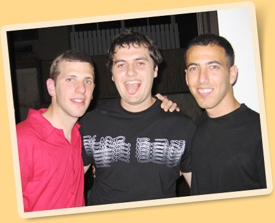
Like everything else he chose to be involved in, Ohad went with his basketball hobby to the end. He was the first to contact all of us and remind us a week in advance not to forget to arrive on Friday. He was the first to offer his car to pick up and bring back all of us in the days when we were still young and a car was a necessary commodity in particular. He was also the first to get upset at any injustice and lack of protection when he thought the choice in the basketball court. Quick to ignite and stubborn in his righteousness, we immediately knew that here it comes - Ohad would enter that special place of his and would be able to argue until the heat went down to correct the tournament injustice. The amazing thing in my eyes was that the more the person he argued with was close to him, the harder his burn to convince, explain and correct was. Disputes with Roi on the basketball courts of Kfar Saba and Ra'anana became in time a real legend that tribe elders still tell their children...
In his love for the game of basketball, for a fair and protective game and for good friends, Ohad was the glue that held us together for 8 long years. In a period full of uncertainties, growth and new beginnings, in which we all turned from boys to men, Ohad's insistence on holding basketball meetings, provided us with an anchor of certainty and anchor in stormy waters. He is missing to all of us. Very much.
Tamir
Birthday parties
Ohad and I met in 9th grade. Not much time passed until we discovered that we were born three days apart from each other. But we only started the tradition of joint parties at our homes eight years later.
We were 23 at the first party, which was on Purim. We planned that everyone would come in costume, but that didn't quite work out, something that didn't detract from the joy of the celebration. A year later the party fell a few weeks after Purim, there were indeed no costumes but it was very happy. The third and last party we celebrated together was at age 25 and was the most successful of all. Like at the beginning of the tradition, the celebration went out on Purim. Ohad and I decided to recreate the first party, but this time we chose a theme for the party - movie and TV show characters. Everyone invested and came in costume. Ohad really invested and dressed as Edward from the movie "Edward Scissorhands", and really got into character.
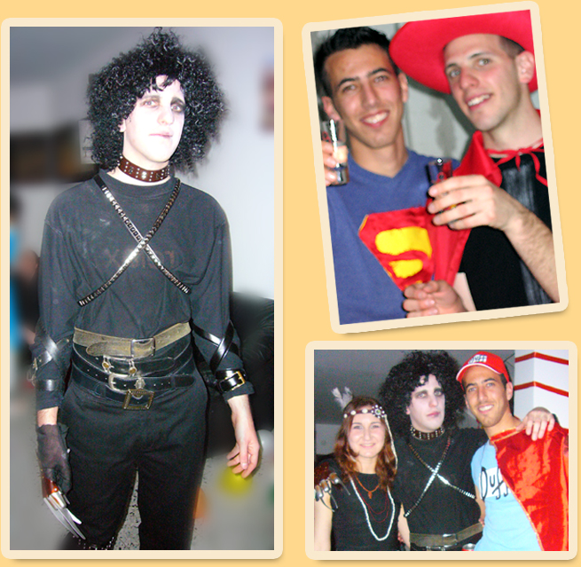
I remember he searched all over Tel Aviv for a narrow and long red cloth that served as a red carpet at the entrance for the Hollywood fantasy. To complete the atmosphere, we hung movie posters at home. Besides costumes, carpet and photos, there was also alcohol, and lots of it. Ohad made sure everyone would drink and be merry, especially the girls. In general he made sure there would be many girls at every party. And of course you can't forget the apple juice mix. Ohad would squeeze insane amounts of apples, 30 kilos every year, simply went into squeezing madness. At the end of each party we had to clean and organize the house, something not easy at all in a drunken state, and even harder when Ohad tries to knock you down with a mop.
The joint parties were a conversation topic among the participants for a long time after the end of the party, a testimony to their great success.